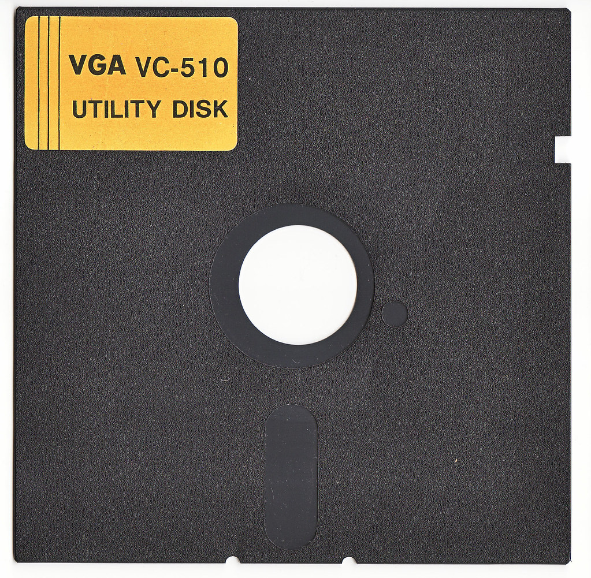
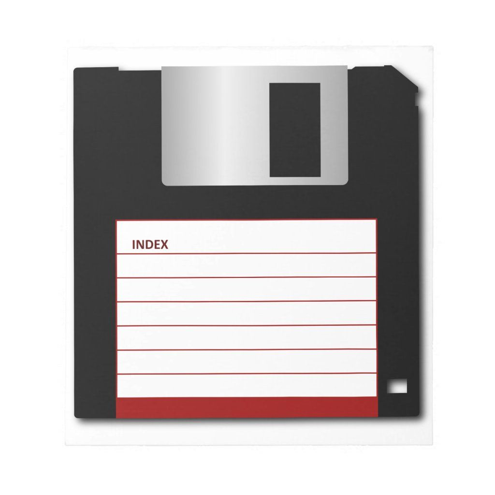
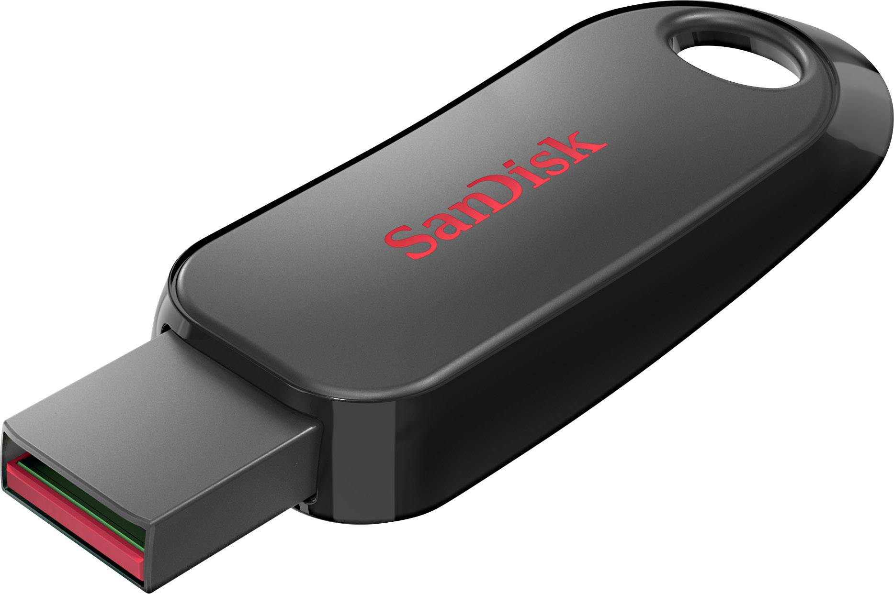
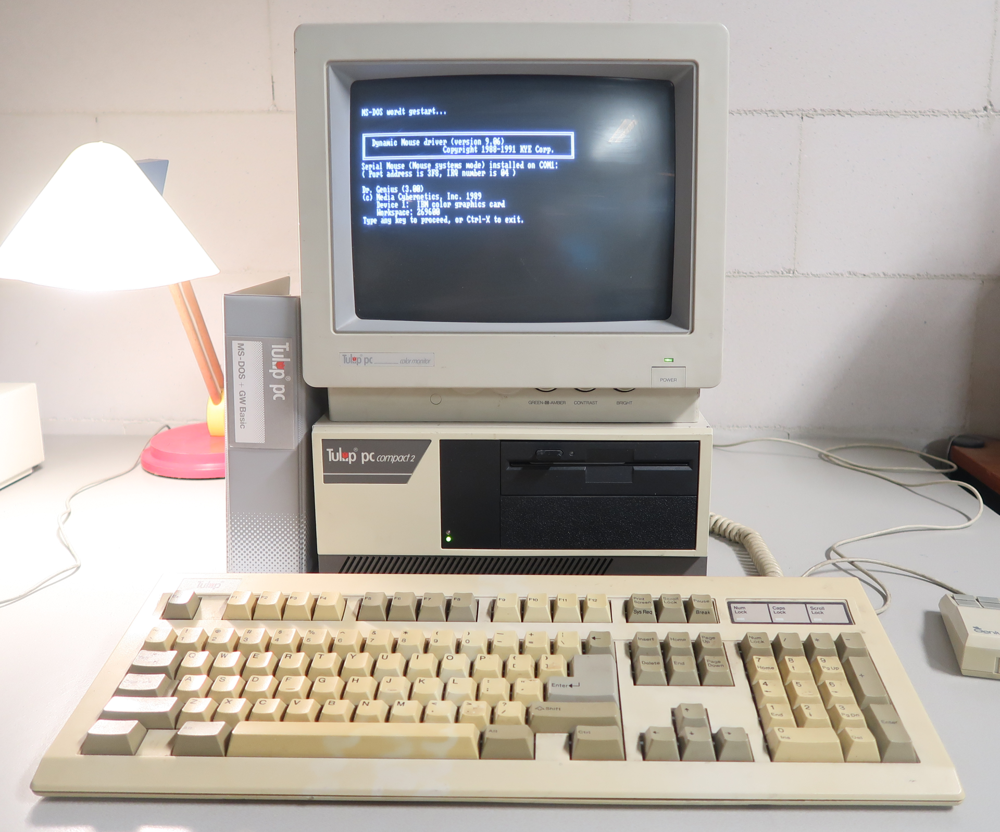
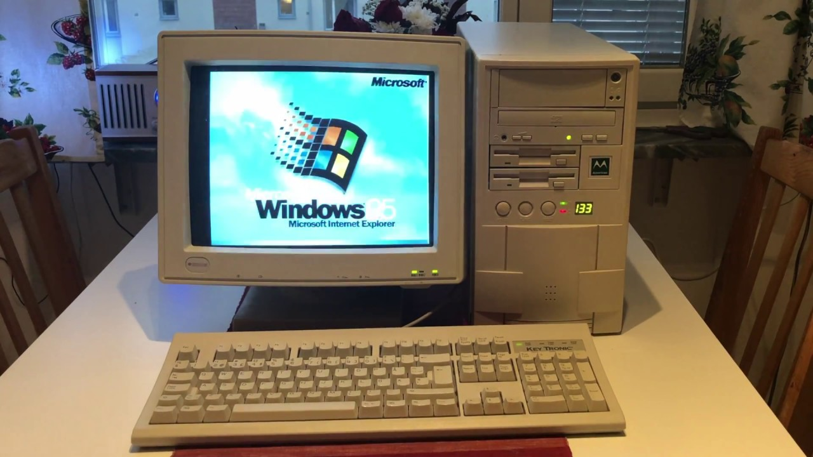

Waugu Scripts (Het ontstaan)
Welkom! Mijn naam is Wim. In 1984 kocht ik
mijn eerste “home computer”. Een heuse pc met een intern geheugen
van 64 KB. Ja, je leest het goed: geen MB of GB, maar slechts 64
kilobytes. De computer werd aangesloten op een draagbare zwart‑wit
televisie, die dienstdeed als monitor. Als opslagmedium gebruikte
ik een cassetterecorder, waardoor het terugvinden van een bepaald
bestand telkens weer een avontuur op zich was. Later introduceerde
Commodore een floppy‑drive, maar die heb ik vanwege de hoge prijs
nooit aangeschaft. In 1984 kocht ik
mijn eerste “home computer”. Een heuse pc met een intern geheugen
van 64 KB. Ja, je leest het goed: geen MB of GB, maar slechts 64
kilobytes. De computer werd aangesloten op een draagbare zwart‑wit
televisie, die dienstdeed als monitor. Als opslagmedium gebruikte
ik een cassetterecorder, waardoor het terugvinden van een bepaald
bestand telkens weer een avontuur op zich was. Later introduceerde
Commodore een floppy‑drive, maar die heb ik vanwege de hoge prijs
nooit aangeschaft.Om met deze machine te kunnen werken, had je eigenlijk enige kennis van de programmeertaal BASIC nodig. Ik heb me daar nooit echt in verdiept. Uiteindelijk gebruikte ik de computer vooral om eenvoudige spelletjes te spelen, zoals Pac‑Man en Frogger — en eerlijk gezegd was dat al magie genoeg. |
 Hoe anders werd het toen ik van mijn zwager een afgedankte IBM 8086‑computer kreeg. Een echte PC! Inclusief een monochroom scherm met groene letters en twee floppy‑drives. De floppy’s waren 5,25 inch en hadden een opslagcapaciteit van 360 KB. Eén drive gebruikte ik voor het besturingssysteem en de andere voor software en data. Het besturingssysteem was IBM‑DOS 3.3, de IBM‑variant van MS‑DOS. Van muisbesturing was nog geen sprake; voor iedere handeling moest je een DOS‑commando typen. Hier ligt de basis van mijn kennis van DOS. Ik raakte steeds meer geïnteresseerd en leerde een groot aantal commando’s uit mijn hoofd, waardoor ik de pc behoorlijk goed kon bedienen. Via‑via kreeg ik de tekstverwerker WordPerfect in handen. Dat was echt een enorme vooruitgang. Dit programma was deels te bedienen via de functietoetsen: F5 om een bestand te openen, F10 om op te slaan en F7 om af te sluiten. (De rest van de toetsen ben ik inmiddels vergeten.) Mijn aandacht ging vooral uit naar de werking van DOS (Disk Operating System). Op mijn verjaardag kreeg ik een harde schijf van 10 MB. (YESSSSS…!!) Die werd natuurlijk meteen ingebouwd. De pc bleef opstarten vanaf de floppy met IBM‑DOS, maar de harde schijf gebruikte ik voortaan voor software en data. Wat een luxe was dat. Daarna ging het snel. Ongeveer om de drie jaar kocht ik een
nieuwe pc, want ik wilde niet achterlopen. Dat betekende sparen,
want een pc kostte in die tijd al gauw zo’n 3000 gulden (het
guldenteken kan ik trouwens ook niet meer vinden op mijn
toetsenbord). Van een 8088‑pc ging ik naar een 286, daarna een
386, vervolgens een Pentium II en later een Pentium IV. Bij elke
nieuwe pc hoorde ook weer een nieuwere versie van MS‑DOS. Volgens
mij heb ik ze bijna allemaal wel gehad. Ook het
Windows‑tijdperk brak aan. De intrede van de muis! Windows 1.0 was
een grafische schil bovenop DOS, met vensters die nog duidelijk in
de kinderschoenen stonden. De muisbesturing was allesbehalve
soepel. Regelmatig moest het rubberen balletje eruit, omdat de
muis van binnen vol stof zat en daardoor constant haperde. Het
onderliggende besturingssysteem - MS‑DOS - werd met versies als
3.1 en later 3.3 steeds stabieler. Windows was toen nog geen
zelfstandig besturingssysteem, maar slechts een grafische laag
bovenop DOS. De échte doorbraak kwam
met Windows 95. Daarna volgden Windows 98 en Windows XP. (XP
draaide technisch gezien niet meer onder MS‑DOS, maar had nog wel een
DOS‑achtige omgeving voor compatibiliteit.) En toen kwam Windows 7. Voor mij was dat een enorme
stap: eindelijk een volledig zelfstandig besturingssysteem dat je
zonder enige kennis van MS-DOS kon bedienen. Een verademing! Programma’s
als Word en Excel - wauw! Wat konden ze daar nog aan verbeteren?
Je kon er “alles” mee, dacht ik toen. Maar de softwarewereld stond niet stil. Windows 10 verscheen, gevolgd door Windows 11. Ook andere software werd steeds gelikter en uitgebreider. Soms vraag ik me af hoe ik ooit met de allereerste versie van WordPerfect heb kunnen werken. De PC's werden goedkoper. De laatste 2 PC's heb ik zelf gebouwd. Zo'n grote kast die veel ruimte in beslag nam. Inmiddels heb ik 2 mini pc's op elkaar staan. een werk pc en een test pc. Ze nemen vrijwel geen ruimte in op mijn bureau. klein maar fijn!!    Sinds mijn pensioen ben ik me steeds verder gaan verdiepen in
de werking van Windows 10 en inmiddels ook Windows 11. Vooral het
oplossen van computerproblemen vind ik een uitdaging. Vrienden,
familie en kennissen weten me dan ook goed te vinden. Al snel hoor
ik dan zoiets als: “Oh, nu ik je toch aan de lijn heb… ik heb
een klein probleempje met de pc…” Omdat ik merkte dat ik in Windows steeds dezelfde handelingen
uitvoerde, ben ik opnieuw begonnen met het maken van
automatiseringsscripts. Mijn oude kennis van MS‑DOS kwam daarbij
goed van pas. Batchbestanden voor backups, onderhoud en opschoning
waren mijn eerste projecten. Maar ik ben niet snel tevreden, dus
wilde ik meer dan alleen zwarte DOS‑schermen. Mijn eerste volledig muisgestuurde backup‑script voelde als een
mijlpaal. Daarna volgden talloze verbeteringen: grotere letters,
foutcontroles, duidelijke meldingen… totdat het precies werkte
zoals ik wilde. Vervolgens heb ik het script gecompileerd tot een
echte .exe en er een Setup‑bestand van gemaakt. Anderen die mijn scripts zagen, vroegen al snel of ze ze ook
mochten gebruiken. Natuurlijk mocht dat. Een kennis zei zelfs:
“Dit moet je op internet zetten joh…”
|
© 2025 Waugu Scripts